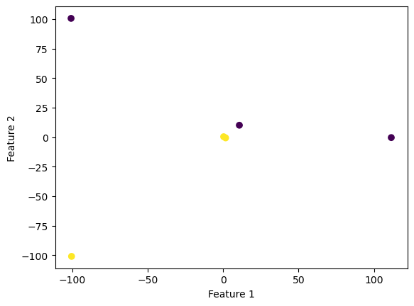
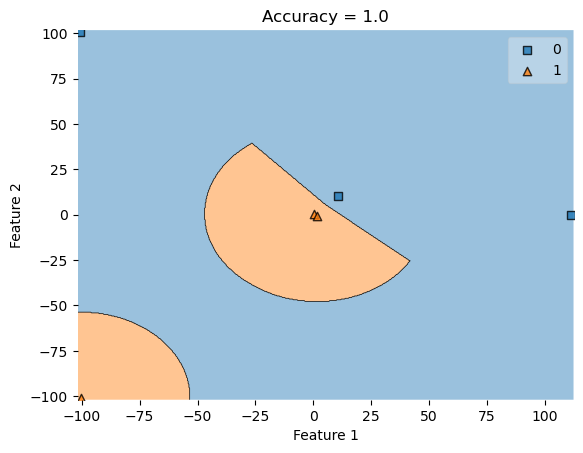
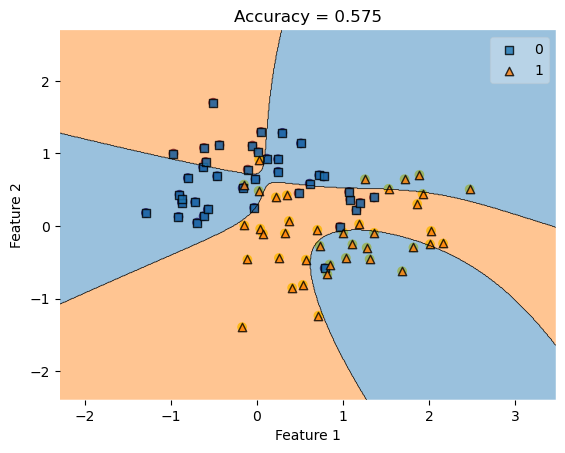

%load_ext autoreload
%autoreload 2The autoreload extension is already loaded. To reload it, use:
%reload_ext autoreloadHere is a link to the source code for this perceptron blog post.
In this blog post I am going to discuss kernel logistic regression for binary classification.
%load_ext autoreload
%autoreload 2The autoreload extension is already loaded. To reload it, use:
%reload_ext autoreloadFirst, let’s import some libraries.
from sklearn.datasets import make_blobs
from sklearn.datasets import make_moons, make_circles
from matplotlib import pyplot as plt
import numpy as np
np.random.seed(42)
np.seterr(all="ignore")
X, y = make_moons(200, shuffle = True, noise = 0.01)
plt.scatter(X[:,0], X[:,1], c = y)
labels = plt.gca().set(xlabel = "Feature 1", ylabel = "Feature 2")
XX = np.array([
[-100.84739307, 100.71154296],
[ 111.46814927, -0.28580296],
[ -100.5192833, -100.94984582],
[ 10.73327397, 10.17310931],
[ 0.33197143, 0.43375035],
[ 1.62726102, -0.54736954]
])
yy = np.array([0, 0, 1, 0, 1, 1])
print(yy)
plt.scatter(XX[:,0], XX[:,1], c = yy)
labels = plt.gca().set(xlabel = "Feature 1", ylabel = "Feature 2")[0 0 1 0 1 1]
from sklearn.linear_model import LogisticRegression
from mlxtend.plotting import plot_decision_regions
# LR = LogisticRegression()
# LR.fit(X, y)
# plot_decision_regions(X, y, clf = LR)
# title = plt.gca().set(title = f"Accuracy = {(LR.predict(X) == y).mean()}",
# xlabel = "Feature 1",
# ylabel = "Feature 2")We work on nonlinear patterns
from sklearn.metrics.pairwise import rbf_kernel
from kernel_logistic import KLR
KLR = KLR(rbf_kernel )
KLR.fit(XX, yy)
print(XX)[[-100.84739307 100.71154296]
[ 111.46814927 -0.28580296]
[-100.5192833 -100.94984582]
[ 10.73327397 10.17310931]
[ 0.33197143 0.43375035]
[ 1.62726102 -0.54736954]]plot_decision_regions(XX, yy, clf = KLR)
mypredict = KLR.predict(XX)
title = plt.gca().set(title = f"Accuracy = {(mypredict == yy).mean()}",
xlabel = "Feature 1",
ylabel = "Feature 2")
print(KLR.predict(XX))
print("OMG")
print(yy)[0 0 1 0 1 1]
OMG
[0 0 1 0 1 1]
from sklearn.datasets import make_blobs
from sklearn.datasets import make_moons, make_circles
from matplotlib import pyplot as plt
import numpy as np
np.random.seed(123)
np.seterr(all="ignore")
from sklearn.linear_model import LogisticRegression
from mlxtend.plotting import plot_decision_regions
X, y = make_moons(80, shuffle = True, noise = 0.3)
plt.scatter(X[:,0], X[:,1], c = y)
labels = plt.gca().set(xlabel = "Feature 1", ylabel = "Feature 2")
KLR.fit(X, y)
plot_decision_regions(X, y, clf = KLR)
yourpredict = KLR.predict(X)
title = plt.gca().set(title = f"Accuracy = {(yourpredict == y).mean()}",
xlabel = "Feature 1",
ylabel = "Feature 2")
print(KLR.predict(X))
print("OMG")
print(y)[0 0 1 1 0 1 0 1 1 1 0 0 0 0 0 0 0 0 0 0 1 1 0 1 0 0 1 0 0 1 1 1 1 0 1 1 1
0 1 1 0 1 0 0 0 1 1 0 0 1 0 1 0 0 0 0 0 0 0 1 0 1 0 1 1 0 1 0 1 1 1 0 1 1
0 1 1 1 1 0]
OMG
[1 1 1 0 1 1 0 1 0 1 0 0 1 0 1 1 1 1 1 0 0 0 1 1 1 0 0 1 0 0 0 1 0 1 1 0 1
0 0 0 0 1 0 0 0 1 0 1 0 1 0 0 0 0 0 0 1 0 0 1 0 1 1 1 1 0 0 1 1 1 1 0 0 1
0 1 1 1 0 1]
print(KLR.v)[ -622.23496279 1335.13521946 681.20950851 -1284.34485486
-525.72085209 333.19420805]